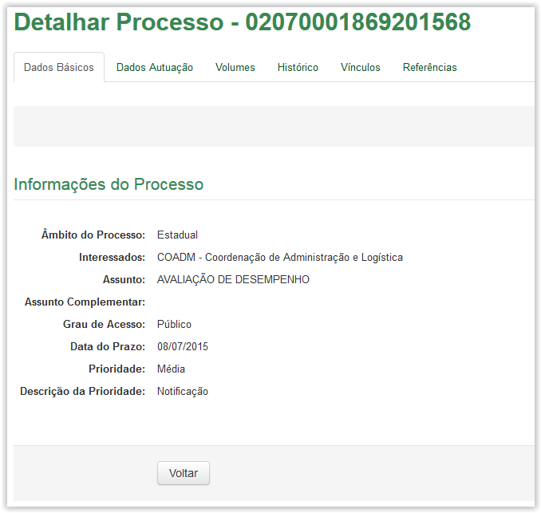
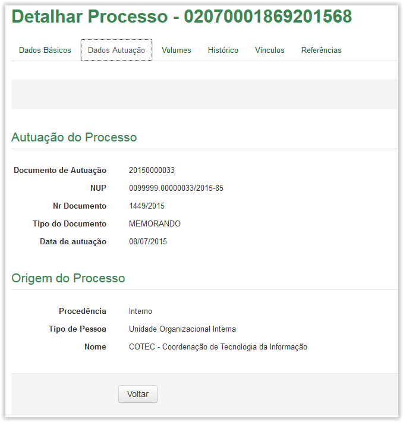
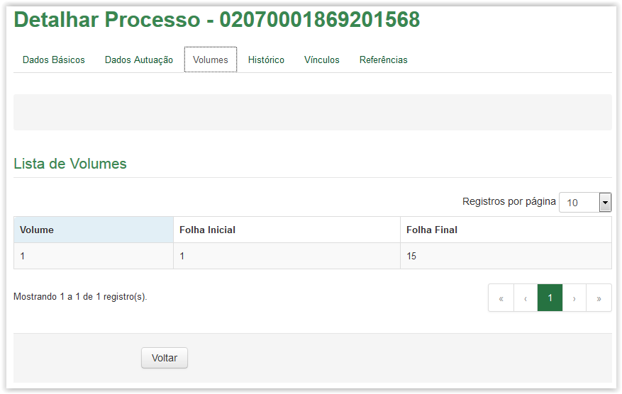
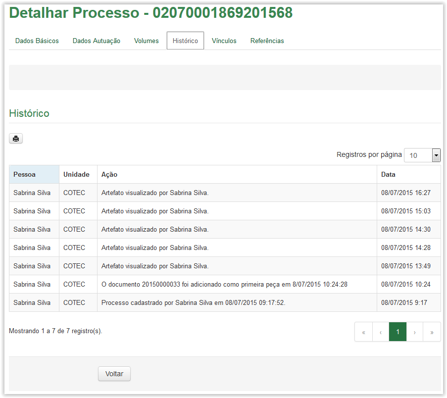
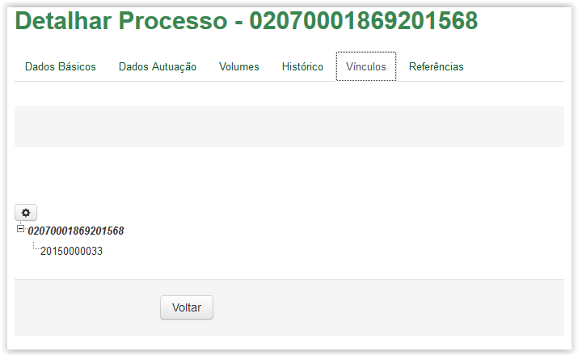
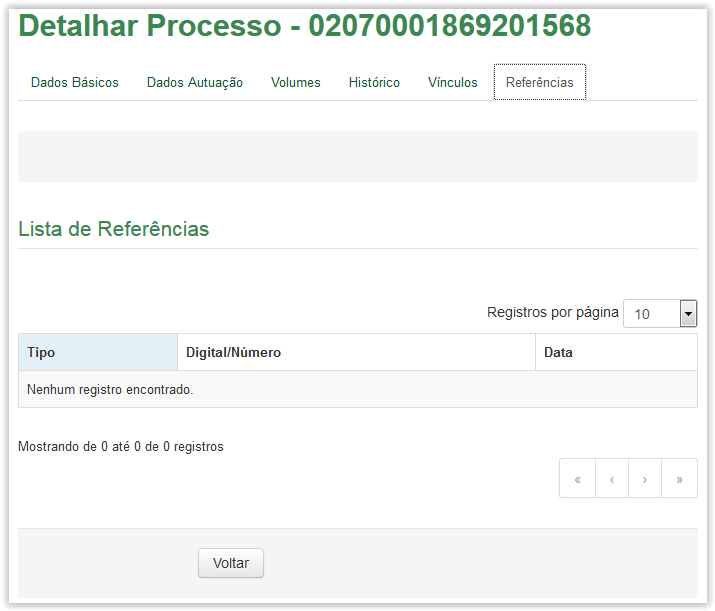

Detalhar artefatos
A tela Detalhar Processo apresenta os dados preenchidos durante o cadastro do processo. As únicas exceções são a aba Histórico, que apresenta os dados das ações sofridas e a aba Vínculos, que apresenta os documentos vinculados numa estrutura de "árvore". A seguir são apresentas as imagens de cada aba:

Tela Detalhar Processo - aba Dados Básicos

Tela Detalhar Processo - aba Dados Autuação

Tela Detalhar Processo - aba Volumes

Tela Detalhar Processo - aba Histórico

Tela Detalhar Processos - aba Vínculos

Tela Detalhar Processo - aba Referências
Created with the Personal Edition of HelpNDoc: Full-featured EBook editor